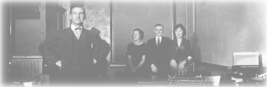

|
Kenneth Kaye, Ph.D., M.F.A.
Ken Kaye earned his A.B. (1966) and Ph.D. (1970) degrees from Harvard University. He was a Knox Fellow at the University of Cambridge, England. Later he trained in family therapy at the Family Institute of Chicago.
Kaye has published dozens of articles and books for professional advisors as well as family business members about resolving the disputes, rifts, and intergenerational tensions that threaten to hobble their enterprises. The book most descriptive of how his firm operates is Workplace Wars and How to End Them: Turning Personal Conflicts into Productive Teamwork (AMACOM Books, 1994). As a researcher, Dr. Kaye authored The Mental and Social Life of Babies: How Parents Create Persons (University of Chicago Press, 1982; subsequently republished in five languages) and more than three dozen articles in scholarly journals. For parents, he has published Family Rules: Raising Responsible Children (without slapping, yelling or nagging) (Walker and Company, 1984; paperback edition, St. Martin's press, 1990), as well as articles for Psychology Today, Redbook, The Sciences, Family Business, Corporate Board, Nation's Business, and many other magazines.
Dr. Kaye's newest book is The Dynamics of Family Business (2005).
A former faculty member at Northwestern University's Institute of Psychiatry, Dr. Kaye participates regularly in the Dispute Resolution group at the university's Kellogg School of Management. He has served on numerous editorial boards and advisory boards, including the Board of Overseers of the Institute of Psychology at Illinois Institute of Technology, the Board of the One-to-One Learning Center, and the Editorial Board of Family Business Review.
Ken Kaye is a North American leader in the field of family business dynamics, having established his consulting specialty in 1986. He received the Family Firm Institute's Contribution to the Field award, helped organize several of its programs and founded the annual conference of leading psychologists who specialize in family business problems. Ken is also a long-time Advisor Member and Consultant to Family Office Exchange (FOX).
An instrument-rated commercial pilot, Ken's work reflects diverse experiences including acting, sailing, mountain climbing, and an MFA from Bennington College in Writing and Literature. He has four adult children and two small grandsons.

|